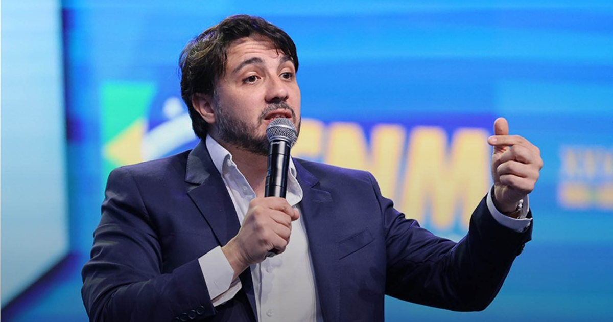

Movimento Brasil Livre
MBL promove segundo festival em São Paulo com sabatina de Renan Santos e debate sobre psicoativos
26/11/2026 às 01:12 (horário de Brasília)

O Movimento Brasil Livre (MBL) retoma suas atividades com a militância neste sábado (28) durante a segunda edição do Festival MBL, sediado no espaço Komplexo Tempo, no bairro da Mooca, na zona leste de São Paulo. O encontro marca o retorno da mobilização das bases do movimento um mês após a disputa eleitoral.
O principal destaque da programação é o ex-candidato à Presidência pelo partido Missão, Renan Santos. Ele participará de uma sabatina intitulada "O futuro é glorioso?", baseada em seu mote de campanha. Além disso, a programação trará uma apresentação de rock da banda de Renan, chamada Limão Rosa, e uma dinâmica em formato de corte inspirada em universidades internacionais para interação do público.
O evento abordará pautas recentes agregadas ao ideário do grupo, com ênfase no debate a respeito da regulamentação do uso de substâncias psicoativas. O encontro contará com a presença confirmada de nomes políticos ligados ao grupo, entre eles o deputado federal Kim Kataguiri (Missão-SP), o deputado estadual eleito Rafael Minatogawa (Missão-SP) e a vereadora da capital paulista Amanda Vettorazzo (União Brasil).